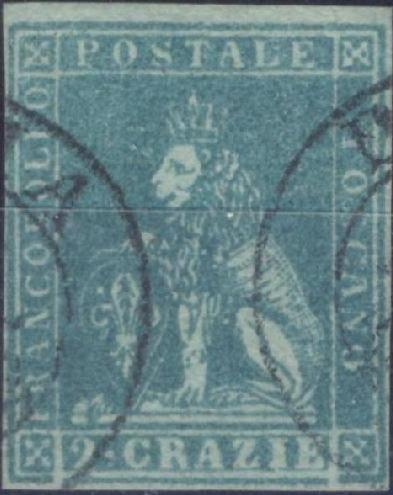
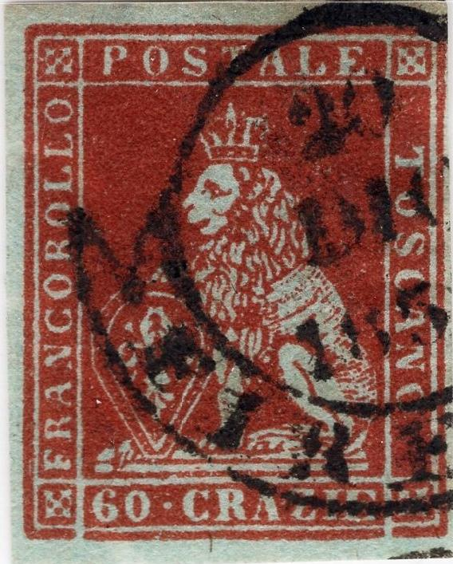

(Reduced sizes)
Toscana - Toscane - Toskana
Return To Catalogue - Tuscany 1851 issue, forgeries, part 1 - Tuscany 1851 issue, forgeries, part 2 - Tuscany 1851 issue, forgeries, part 3 - Tuscany 1851 issue, forgeries, part 4 - Tuscany 1851 issue, more Fournier forgeries - Tuscany 1851, Oneglia(?) forgeries - Tuscany 1851 issue - Tuscany 1860 issue and miscellaneous - Italy
Note: on my website many of the
pictures can not be seen! They are of course present in the
catalogue;
contact me if you want to purchase the catalogue.
Tuscany 1851 issue, forgeries, part 1 - Tuscany 1851 issue, forgeries, part 2 - Tuscany 1851 issue, forgeries, part 3 - Tuscany 1851 issue, forgeries, part 4 - Tuscany 1851 issue, more Fournier forgeries - Tuscany 1851, Oneglia(?) forgeries
(Reduced sizes)


Other Fournier forgeries, with 'FAC-SIMILE' printed on the
backside.



Forgery on the left has a watermark. In my view the final
"O" of "TOSCANO" is slanting backwards in
this 60 Cr Fournier forgery. Also the bottom left part of the
"Z" of "CRAZIE" is damaged.


Fournier forgery with "SANFA EUFEMIA" cancel (not shown
in the Fournier Album) and another one with a cancel I can't
decipher.
The above forgeries are Fournier forgeries with (!) watermark? In my opinion, for the lower values, the line just above the value inscription is too thick in the Fournier forgeries.

Forged cancels made by Fournier as found in 'The Fournier Album
of Philatelic Forgeries', reduced sizes: "S. MINIATO 25 NOV
1855", "LUCCA 1 ATT 1853", "PONTEDERA",
"EMPOLI", "FIRENZA 27 FEB 1858" and
"LIVORNO"
A page from a 'Fournier Album of Philatelic Forgeries'
Another page of the 'Fournier Album'
Some other cancelled Fournier forgeries from a 'Fournier Album'
(reduced size)


Other Fournier forgeries taken from a Fournier Album:


Most likely a Fournier forgery as well.
If anybody has more information on how to distinguish Fournier forgeries from genuine stamps, please contact me! For more Fournier forgeries: Tuscany 1851 issue, more Fournier forgeries


{kind=link}
{kind=link}
{kind=link}
{kind=link}